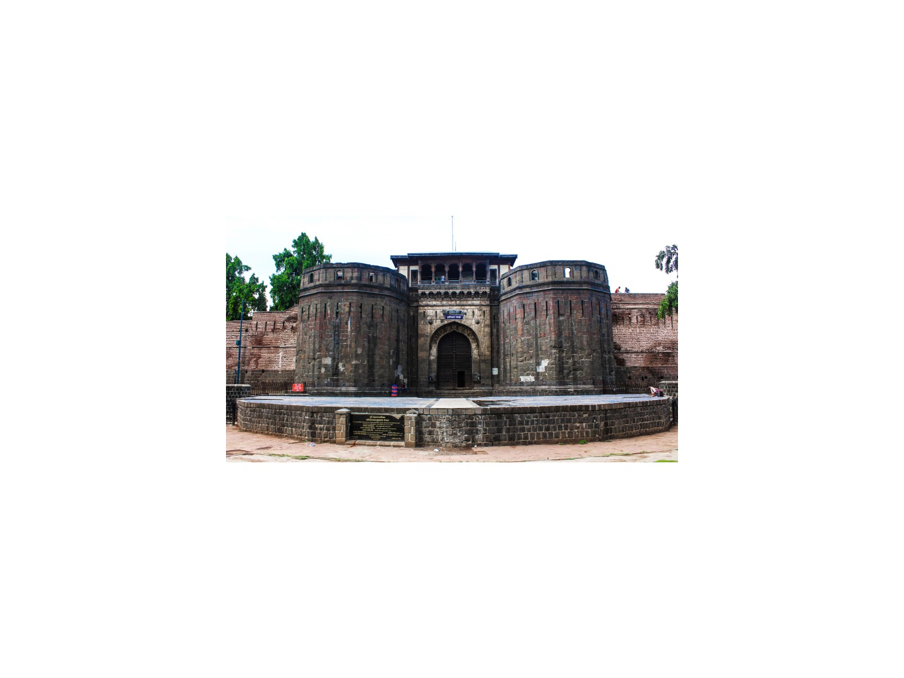

Шанивар-вада
Дворец-крепость пешв Маратхской империи в Пуне
Обзор
Шанивар-вада была возведена в 1732 году пешвой Баджирао I как главная резиденция пешв — первых министров, правивших Маратхской империей из Пуны. Некогда здесь высился многоэтажный дворец с дворами, фонтанами и высокими деревянными залами.
Пожар 1828 года уничтожил почти все деревянные постройки, но сохранились мощные каменные стены, ворота и фундаменты. Главные ворота Дилли-Дарваза усажены длинными железными шипами против боевых слонов.
На что обратить внимание
- Ворота Дилли-Дарваза с шипами против слонов
- Сохранившиеся крепостные стены, бастионы и ворота
- Фонтан Хазари Карандже в форме лотоса
- Сады и фундаменты утраченных дворцовых залов
Советы по посещению
- Заложите около часа; территория открытая, поэтому лучше избегать полуденного зноя.
- Рассказ гида помогает зримо представить исчезнувший дворец.
- Вечером здесь проходит светозвуковое шоу — уточняйте расписание.
Почему стоит идти с частным гидом
Частный гид покажет и объяснит: ворота Дилли-Дарваза с шипами против слонов; сохранившиеся крепостные стены, бастионы и ворота. Он также поможет выбрать лучшее время визита (утро).
Ещё фотографии


Рядом
Пещеры Карла Храм Тримбакешвар Пещеры Бхаджа Форт Лохагад Дворец Ага-Хана Пещерный храм Паталешвар Пещеры Пандавлени Рамкунд
Путешествия, включающие это место
 9 дней
9 дней9 дней: пещеры и цитадели Декана — Элефанта, Эллора, Аджанта и Даулатабад
Аджанта, Эллора, Элефанта и Даулатабад: девять дней среди самых выдающихся скальных пещер и фортов Декана.
Подробнее → 13 дней
13 дней13 дней: империи Сахьядри — морские форты, пещерные храмы и метеоритный кратер
Морские форты, цитадель Шиваджи, пещеры Аджанты и Эллоры и метеоритный кратер Лонар — тринадцать дней по Махараштре.
Подробнее →Расскажите о датах и интересах
Я лично подготовлю программу и расчёт стоимости в течение 24 часов. Никаких групп и шаблонов.